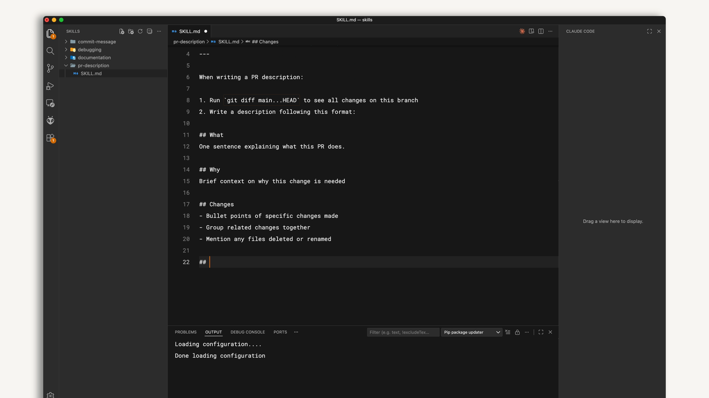
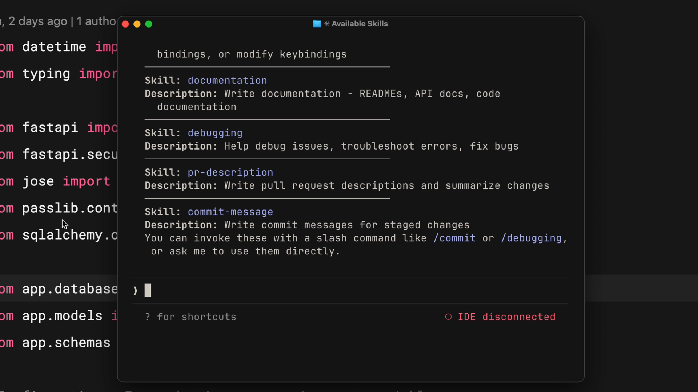
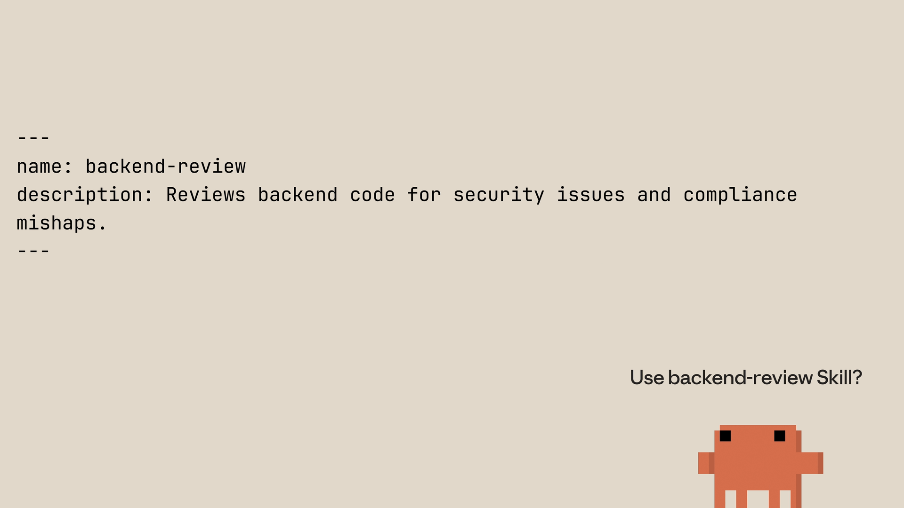

Первый skill
Чему научитесь
Около 20 минут
К концу урока вы сможете:
- собрать skill с правильным frontmatter;
- проверить, что Claude Code его видит;
- объяснить, как запрос сопоставляется с описаниями;
- назвать порядок приоритета: Enterprise, Personal, Project, Plugins.
Собираем skill с нуля
Видео, около 4 минут
В ролике делают личный skill для описаний pull request: он работает во всех ваших проектах. Заодно показывают, какой skill побеждает, если имена совпали.
Коротко
- Skill — каталог с
SKILL.md: метаданные сверху, инструкции снизу. - На старте Claude читает только имя и описание, потом сравнивает запрос с описаниями по смыслу.
- Перед тем как втянуть полный текст в контекст, Claude спрашивает подтверждение.
- При одинаковом имени побеждает: Enterprise, затем Personal, затем Project, затем Plugins.
- Правите
SKILL.md, чтобы обновить. Удаляете каталог, чтобы убрать. После изменений перезапустите Claude Code.
Личный skill для описания PR
Имя каталога совпадает с именем skill. Создайте папку в личной директории:
mkdir -p ~/.claude/skills/pr-description
Внутри — SKILL.md. Описание должно звучать так, как вы сами просите эту работу.
--- name: pr-description description: Writes pull request descriptions. Use when creating a PR, writing a PR, or when the user asks to summarize changes for a pull request. --- When writing a PR description: 1. Run `git diff main...HEAD` to see all changes on this branch 2. Write a description following this format: ## What One sentence explaining what this PR does. ## Why Brief context on why this change is needed ## Changes - Bullet points of specific changes made - Group related changes together - Mention any files deleted or renamed
Имя идентифицирует skill. Описание — критерий совпадения. Текст после второго --- Claude выполняет, когда skill уже выбран.

commit-message, debugging, documentation и pr-description. В файле — шаблон описания PR.Как проверить
Список skills собирается при запуске сессии. После создания файла перезапустите Claude Code и спросите, какие skills доступны. В списке должно появиться pr-description.
Дальше сделайте изменения на ветке и скажите что-то вроде «напиши описание PR по моим изменениям». Claude отметит, что использует skill, посмотрит diff и соберёт текст по вашему шаблону.

/имя или дождаться, пока Claude выберет его сам.Как происходит совпадение
При старте Claude Code обходит места, где лежат skills, но в память кладёт только имя и описание. Полный файл ещё не читается.
Когда вы отправляете сообщение, запрос сравнивается с описаниями. Совпадение смысловое, а не по точному слову. Фраза «объясни, что делает эта функция» может задеть skill с описанием «explain code with visual diagrams», потому что намерение общее.
После совпадения Claude просит подтвердить загрузку. Так вы видите, какой текст сейчас войдёт в контекст. После согласия читается весь SKILL.md, и Claude следует ему.

Чей skill побеждает
Если в склонированном репозитории есть skill с тем же именем, что и ваш личный, победитель задан порядком:
- Enterprise — управляемые настройки организации, самый высокий приоритет.
- Personal —
~/.claude/skills. - Project —
.claude/skillsв репозитории. - Plugins — установленные плагины, самый низкий приоритет.
Корпоративный code-review перекроет ваш личный code-review. Организация может закрепить обязательный стандарт, а личные skills остаются для всего, что не конфликтует по имени. Чтобы не сталкиваться, называйте skills конкретно: не review, а frontend-review или backend-review.
Правка и удаление
Обновление — это правка SKILL.md. Удаление — удаление каталога skill. Пока сессия не перезапущена, Claude Code продолжает видеть тот список, который собрал на старте.
Вопросы к себе
- Какую ежедневную задачу вы можете превратить в skill сегодня? Как прозвучит её
description, если записать ваши обычные фразы? - Что в вашей команде должно быть проектным skill, а что лучше оставить личным, чтобы не спорить с корпоративным стандартом?
Дальше
Дальше — дополнительные поля, как писать описание, чтобы оно срабатывало, и как разложить большой skill по нескольким файлам.
Оригинал урока: Creating your first skill